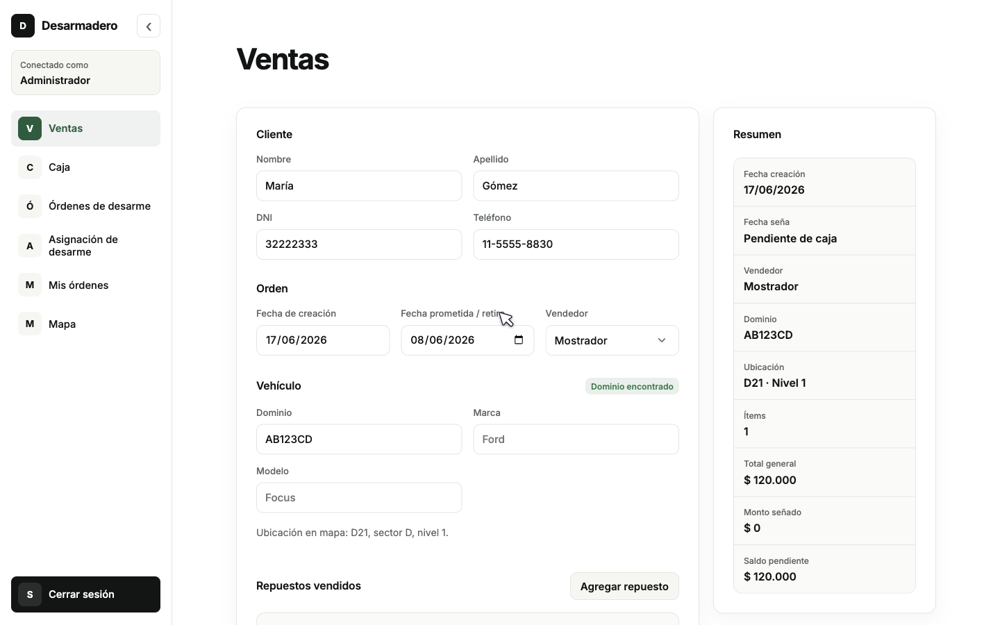
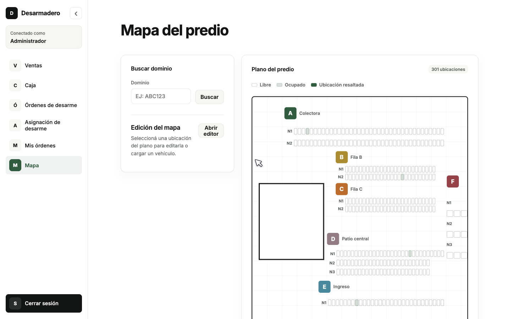

The problem
Sales, payments, sheets, messages, and locations lived apart.
The cost
Sale, payment, assignment, and yard location.

The prototype
The client could click through the real operation.
How it works
Seller, cash desk, manager, and dismantler each see their part.

The result
301 yard positions became searchable by plate.
Why it matters
The client reacted to a working model, not abstract requirements.